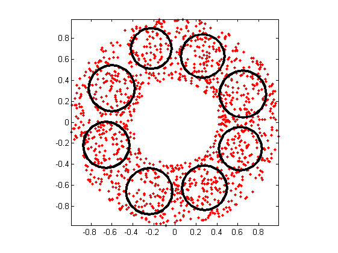
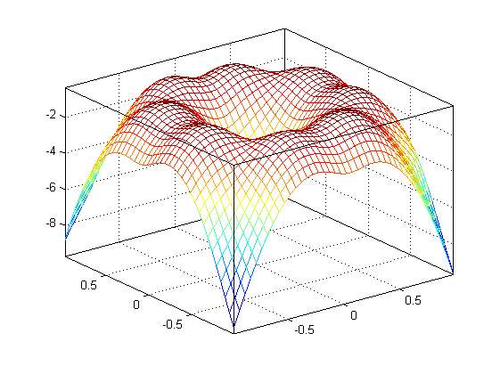
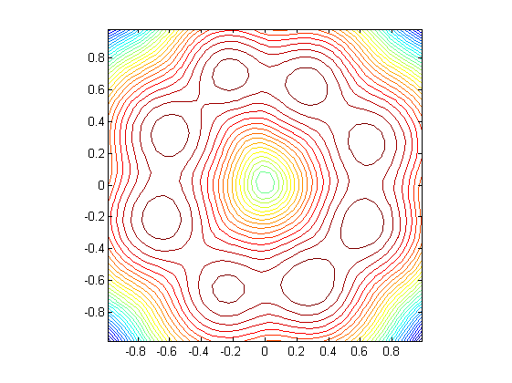

gmmTrainDemo2dCovType01
Animation of GMM training with covType=1 (isotropic) for 2D data
Contents
Syntax
- gmmTrainDemo2dCovType01
Description
gmmTrainDemo2dCovType01 demonstrates animation of GMM training with
covType=1 (isotropic) for 2D data.
Example
gmmTrainDemo2dCovType01
GMM iteration: 0/500, log likelihood. = -2308.477550 GMM iteration: 1/500, log likelihood. = -1889.499188 GMM iteration: 2/500, log likelihood. = -1813.938149 GMM iteration: 3/500, log likelihood. = -1734.253046 GMM iteration: 4/500, log likelihood. = -1662.361458 GMM iteration: 5/500, log likelihood. = -1609.604700 GMM iteration: 6/500, log likelihood. = -1579.691034 GMM iteration: 7/500, log likelihood. = -1566.898016 GMM iteration: 8/500, log likelihood. = -1562.082078 GMM iteration: 9/500, log likelihood. = -1559.758415 GMM iteration: 10/500, log likelihood. = -1558.137037 GMM iteration: 11/500, log likelihood. = -1556.756913 GMM iteration: 12/500, log likelihood. = -1555.489370 GMM iteration: 13/500, log likelihood. = -1554.293148 GMM iteration: 14/500, log likelihood. = -1553.153920 GMM iteration: 15/500, log likelihood. = -1552.063457 GMM iteration: 16/500, log likelihood. = -1551.011950 GMM iteration: 17/500, log likelihood. = -1549.987321 GMM iteration: 18/500, log likelihood. = -1548.977446 GMM iteration: 19/500, log likelihood. = -1547.972329 GMM iteration: 20/500, log likelihood. = -1546.965074 GMM iteration: 21/500, log likelihood. = -1545.951882 GMM iteration: 22/500, log likelihood. = -1544.931599 GMM iteration: 23/500, log likelihood. = -1543.905188 GMM iteration: 24/500, log likelihood. = -1542.875195 GMM iteration: 25/500, log likelihood. = -1541.845209 GMM iteration: 26/500, log likelihood. = -1540.819262 GMM iteration: 27/500, log likelihood. = -1539.801197 GMM iteration: 28/500, log likelihood. = -1538.794076 GMM iteration: 29/500, log likelihood. = -1537.799699 GMM iteration: 30/500, log likelihood. = -1536.818336 GMM iteration: 31/500, log likelihood. = -1535.848697 GMM iteration: 32/500, log likelihood. = -1534.888174 GMM iteration: 33/500, log likelihood. = -1533.933307 GMM iteration: 34/500, log likelihood. = -1532.980454 GMM iteration: 35/500, log likelihood. = -1532.026612 GMM iteration: 36/500, log likelihood. = -1531.070341 GMM iteration: 37/500, log likelihood. = -1530.112708 GMM iteration: 38/500, log likelihood. = -1529.158107 GMM iteration: 39/500, log likelihood. = -1528.214728 GMM iteration: 40/500, log likelihood. = -1527.294391 GMM iteration: 41/500, log likelihood. = -1526.411525 GMM iteration: 42/500, log likelihood. = -1525.581324 GMM iteration: 43/500, log likelihood. = -1524.817425 GMM iteration: 44/500, log likelihood. = -1524.129798 GMM iteration: 45/500, log likelihood. = -1523.523476 GMM iteration: 46/500, log likelihood. = -1522.998444 GMM iteration: 47/500, log likelihood. = -1522.550511 GMM iteration: 48/500, log likelihood. = -1522.172692 GMM iteration: 49/500, log likelihood. = -1521.856607 GMM iteration: 50/500, log likelihood. = -1521.593591 GMM iteration: 51/500, log likelihood. = -1521.375425 GMM iteration: 52/500, log likelihood. = -1521.194720 GMM iteration: 53/500, log likelihood. = -1521.045070 GMM iteration: 54/500, log likelihood. = -1520.921047 GMM iteration: 55/500, log likelihood. = -1520.818122 GMM iteration: 56/500, log likelihood. = -1520.732551 GMM iteration: 57/500, log likelihood. = -1520.661258 GMM iteration: 58/500, log likelihood. = -1520.601725 GMM iteration: 59/500, log likelihood. = -1520.551894 GMM iteration: 60/500, log likelihood. = -1520.510082 GMM iteration: 61/500, log likelihood. = -1520.474911 GMM iteration: 62/500, log likelihood. = -1520.445255 GMM iteration: 63/500, log likelihood. = -1520.420189 GMM iteration: 64/500, log likelihood. = -1520.398951 GMM iteration: 65/500, log likelihood. = -1520.380916 GMM iteration: 66/500, log likelihood. = -1520.365567 GMM iteration: 67/500, log likelihood. = -1520.352475 GMM iteration: 68/500, log likelihood. = -1520.341286 GMM iteration: 69/500, log likelihood. = -1520.331703 GMM iteration: 70/500, log likelihood. = -1520.323480 GMM iteration: 71/500, log likelihood. = -1520.316412 GMM iteration: 72/500, log likelihood. = -1520.310326 GMM iteration: 73/500, log likelihood. = -1520.305076 GMM iteration: 74/500, log likelihood. = -1520.300540 GMM iteration: 75/500, log likelihood. = -1520.296616 GMM iteration: 76/500, log likelihood. = -1520.293217 GMM iteration: 77/500, log likelihood. = -1520.290267 GMM iteration: 78/500, log likelihood. = -1520.287705 GMM iteration: 79/500, log likelihood. = -1520.285476 GMM iteration: 80/500, log likelihood. = -1520.283536 GMM iteration: 81/500, log likelihood. = -1520.281845 GMM iteration: 82/500, log likelihood. = -1520.280369 GMM iteration: 83/500, log likelihood. = -1520.279081 GMM iteration: 84/500, log likelihood. = -1520.277954 GMM iteration: 85/500, log likelihood. = -1520.276969 GMM iteration: 86/500, log likelihood. = -1520.276107 GMM iteration: 87/500, log likelihood. = -1520.275351 GMM iteration: 88/500, log likelihood. = -1520.274688 GMM iteration: 89/500, log likelihood. = -1520.274107 GMM iteration: 90/500, log likelihood. = -1520.273597 GMM iteration: 91/500, log likelihood. = -1520.273149 GMM iteration: 92/500, log likelihood. = -1520.272755 GMM iteration: 93/500, log likelihood. = -1520.272409 GMM iteration: 94/500, log likelihood. = -1520.272105 GMM iteration: 95/500, log likelihood. = -1520.271837 GMM iteration: 96/500, log likelihood. = -1520.271601 GMM iteration: 97/500, log likelihood. = -1520.271393 GMM iteration: 98/500, log likelihood. = -1520.271210 GMM iteration: 99/500, log likelihood. = -1520.271049 GMM iteration: 100/500, log likelihood. = -1520.270907 GMM iteration: 101/500, log likelihood. = -1520.270782 GMM iteration: 102/500, log likelihood. = -1520.270671 GMM iteration: 103/500, log likelihood. = -1520.270574 GMM iteration: 104/500, log likelihood. = -1520.270488 GMM iteration: 105/500, log likelihood. = -1520.270412 GMM iteration: 106/500, log likelihood. = -1520.270345 GMM iteration: 107/500, log likelihood. = -1520.270286 GMM iteration: 108/500, log likelihood. = -1520.270233 GMM iteration: 109/500, log likelihood. = -1520.270187 GMM iteration: 110/500, log likelihood. = -1520.270147 GMM iteration: 111/500, log likelihood. = -1520.270111 GMM iteration: 112/500, log likelihood. = -1520.270079 GMM iteration: 113/500, log likelihood. = -1520.270051 GMM iteration: 114/500, log likelihood. = -1520.270026 GMM iteration: 115/500, log likelihood. = -1520.270004 GMM iteration: 116/500, log likelihood. = -1520.269984 GMM iteration: 117/500, log likelihood. = -1520.269967 GMM iteration: 118/500, log likelihood. = -1520.269952 GMM iteration: 119/500, log likelihood. = -1520.269939 GMM iteration: 120/500, log likelihood. = -1520.269927 GMM iteration: 121/500, log likelihood. = -1520.269916 GMM iteration: 122/500, log likelihood. = -1520.269907 GMM iteration: 123/500, log likelihood. = -1520.269899 GMM iteration: 124/500, log likelihood. = -1520.269892 GMM iteration: 125/500, log likelihood. = -1520.269885 GMM iteration: 126/500, log likelihood. = -1520.269880 GMM iteration: 127/500, log likelihood. = -1520.269875 GMM iteration: 128/500, log likelihood. = -1520.269870 GMM iteration: 129/500, log likelihood. = -1520.269866 GMM iteration: 130/500, log likelihood. = -1520.269863 GMM iteration: 131/500, log likelihood. = -1520.269860 GMM iteration: 132/500, log likelihood. = -1520.269857 GMM iteration: 133/500, log likelihood. = -1520.269855 GMM iteration: 134/500, log likelihood. = -1520.269852 GMM iteration: 135/500, log likelihood. = -1520.269851 GMM iteration: 136/500, log likelihood. = -1520.269849 GMM iteration: 137/500, log likelihood. = -1520.269847 GMM iteration: 138/500, log likelihood. = -1520.269846 GMM iteration: 139/500, log likelihood. = -1520.269845 GMM iteration: 140/500, log likelihood. = -1520.269844 GMM iteration: 141/500, log likelihood. = -1520.269843 GMM iteration: 142/500, log likelihood. = -1520.269842 GMM iteration: 143/500, log likelihood. = -1520.269842 GMM iteration: 144/500, log likelihood. = -1520.269841 GMM iteration: 145/500, log likelihood. = -1520.269840 GMM iteration: 146/500, log likelihood. = -1520.269840 GMM iteration: 147/500, log likelihood. = -1520.269839 GMM iteration: 148/500, log likelihood. = -1520.269839 GMM iteration: 149/500, log likelihood. = -1520.269839 GMM iteration: 150/500, log likelihood. = -1520.269838 GMM iteration: 151/500, log likelihood. = -1520.269838 GMM iteration: 152/500, log likelihood. = -1520.269838 GMM iteration: 153/500, log likelihood. = -1520.269838 GMM iteration: 154/500, log likelihood. = -1520.269838 GMM iteration: 155/500, log likelihood. = -1520.269837 GMM iteration: 156/500, log likelihood. = -1520.269837 GMM iteration: 157/500, log likelihood. = -1520.269837 GMM iteration: 158/500, log likelihood. = -1520.269837 GMM iteration: 159/500, log likelihood. = -1520.269837 GMM iteration: 160/500, log likelihood. = -1520.269837 GMM iteration: 161/500, log likelihood. = -1520.269837 GMM iteration: 162/500, log likelihood. = -1520.269837 GMM iteration: 163/500, log likelihood. = -1520.269837 GMM iteration: 164/500, log likelihood. = -1520.269837 GMM iteration: 165/500, log likelihood. = -1520.269836 GMM iteration: 166/500, log likelihood. = -1520.269836 GMM iteration: 167/500, log likelihood. = -1520.269836 GMM iteration: 168/500, log likelihood. = -1520.269836 GMM iteration: 169/500, log likelihood. = -1520.269836 GMM iteration: 170/500, log likelihood. = -1520.269836 GMM iteration: 171/500, log likelihood. = -1520.269836 GMM iteration: 172/500, log likelihood. = -1520.269836 GMM iteration: 173/500, log likelihood. = -1520.269836 GMM iteration: 174/500, log likelihood. = -1520.269836 GMM iteration: 175/500, log likelihood. = -1520.269836 GMM iteration: 176/500, log likelihood. = -1520.269836 GMM iteration: 177/500, log likelihood. = -1520.269836 GMM iteration: 178/500, log likelihood. = -1520.269836 GMM iteration: 179/500, log likelihood. = -1520.269836 GMM iteration: 180/500, log likelihood. = -1520.269836 GMM iteration: 181/500, log likelihood. = -1520.269836 GMM iteration: 182/500, log likelihood. = -1520.269836 GMM iteration: 183/500, log likelihood. = -1520.269836 GMM iteration: 184/500, log likelihood. = -1520.269836 GMM iteration: 185/500, log likelihood. = -1520.269836 GMM iteration: 186/500, log likelihood. = -1520.269836 GMM iteration: 187/500, log likelihood. = -1520.269836 GMM iteration: 188/500, log likelihood. = -1520.269836 GMM iteration: 189/500, log likelihood. = -1520.269836 GMM iteration: 190/500, log likelihood. = -1520.269836 GMM iteration: 191/500, log likelihood. = -1520.269836 GMM iteration: 192/500, log likelihood. = -1520.269836 GMM iteration: 193/500, log likelihood. = -1520.269836 GMM iteration: 194/500, log likelihood. = -1520.269836 GMM iteration: 195/500, log likelihood. = -1520.269836 GMM iteration: 196/500, log likelihood. = -1520.269836 GMM iteration: 197/500, log likelihood. = -1520.269836 GMM iteration: 198/500, log likelihood. = -1520.269836 GMM iteration: 199/500, log likelihood. = -1520.269836 GMM iteration: 200/500, log likelihood. = -1520.269836 GMM iteration: 201/500, log likelihood. = -1520.269836 GMM iteration: 202/500, log likelihood. = -1520.269836 GMM iteration: 203/500, log likelihood. = -1520.269836 GMM iteration: 204/500, log likelihood. = -1520.269836 GMM iteration: 205/500, log likelihood. = -1520.269836 GMM iteration: 206/500, log likelihood. = -1520.269836 GMM iteration: 207/500, log likelihood. = -1520.269836 GMM iteration: 208/500, log likelihood. = -1520.269836 GMM iteration: 209/500, log likelihood. = -1520.269836 GMM iteration: 210/500, log likelihood. = -1520.269836 GMM iteration: 211/500, log likelihood. = -1520.269836 GMM iteration: 212/500, log likelihood. = -1520.269836 GMM iteration: 213/500, log likelihood. = -1520.269836 GMM iteration: 214/500, log likelihood. = -1520.269836 GMM iteration: 215/500, log likelihood. = -1520.269836 GMM iteration: 216/500, log likelihood. = -1520.269836 GMM iteration: 217/500, log likelihood. = -1520.269836 GMM iteration: 218/500, log likelihood. = -1520.269836 GMM iteration: 219/500, log likelihood. = -1520.269836 GMM iteration: 220/500, log likelihood. = -1520.269836 GMM iteration: 221/500, log likelihood. = -1520.269836 GMM iteration: 222/500, log likelihood. = -1520.269836 GMM iteration: 223/500, log likelihood. = -1520.269836 GMM iteration: 224/500, log likelihood. = -1520.269836 GMM iteration: 225/500, log likelihood. = -1520.269836 GMM iteration: 226/500, log likelihood. = -1520.269836 GMM iteration: 227/500, log likelihood. = -1520.269836 GMM iteration: 228/500, log likelihood. = -1520.269836 GMM iteration: 229/500, log likelihood. = -1520.269836 GMM iteration: 230/500, log likelihood. = -1520.269836 GMM iteration: 231/500, log likelihood. = -1520.269836 GMM iteration: 232/500, log likelihood. = -1520.269836 GMM iteration: 233/500, log likelihood. = -1520.269836 GMM iteration: 234/500, log likelihood. = -1520.269836 GMM iteration: 235/500, log likelihood. = -1520.269836 GMM iteration: 236/500, log likelihood. = -1520.269836 GMM iteration: 237/500, log likelihood. = -1520.269836 GMM iteration: 238/500, log likelihood. = -1520.269836 GMM iteration: 239/500, log likelihood. = -1520.269836 GMM iteration: 240/500, log likelihood. = -1520.269836 GMM iteration: 241/500, log likelihood. = -1520.269836 GMM iteration: 242/500, log likelihood. = -1520.269836 GMM iteration: 243/500, log likelihood. = -1520.269836 GMM total iteration count = 244, log likelihood. = -1520.269836  